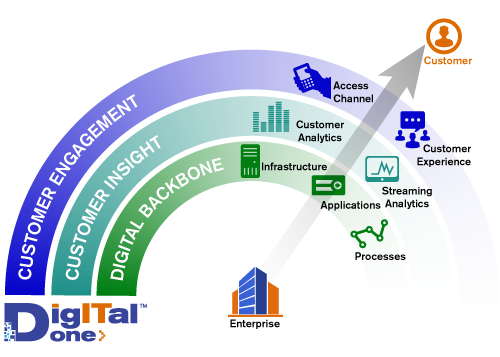
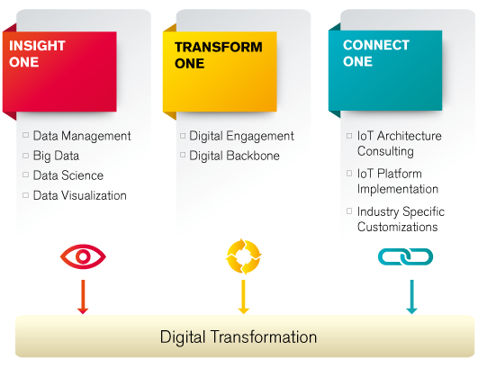

Syntel’s approach to digital transformation focuses on the end-to-end business and technology capabilities required to support multi-channel engagements and deliver a personalized experience to every customer.
The customer is central to the digital enterprise. With this core belief, Syntel has developed a three-layered approach for digital transformation.

Digital One™ combines the power of Syntel’s expertise across industry domains and enterprise systems with next-generation technology capabilities in Mobility, Social, Big Data Analytics, Internet of Things, Cloud, Process Digitization and Digital Integration to transform your organization.
Syntel is uniquely positioned in the market as an end-to-end integrated digital service partner and innovator to help customers in their digital journey.
Syntel Offerings
Digital innovations are transforming the way customers and businesses interact. To navigate this changing landscape, enterprises need to be flexible, adaptive and agile.
Syntel's Digital One™ group partners with our clients to engage and influence customers, and to enable them to create an omni-channel and customer-centric experience. Our service offerings are aligned to three important technology areas.

Examples of value delivered to our partners across industries.
|
3X faster invoicing
for a Global Logistics Company |
80% reduced downtime with preventive maintenance
for a Large Automotive Company |
|
50% faster time to market
for a Global Credit Card Major |
25% less revenue leakage
for a Global Business Travel Company |
Syntel also offers its Agile consulting capabilities to engage and deliver quick, on-time and top quality digital solutions to its customers.